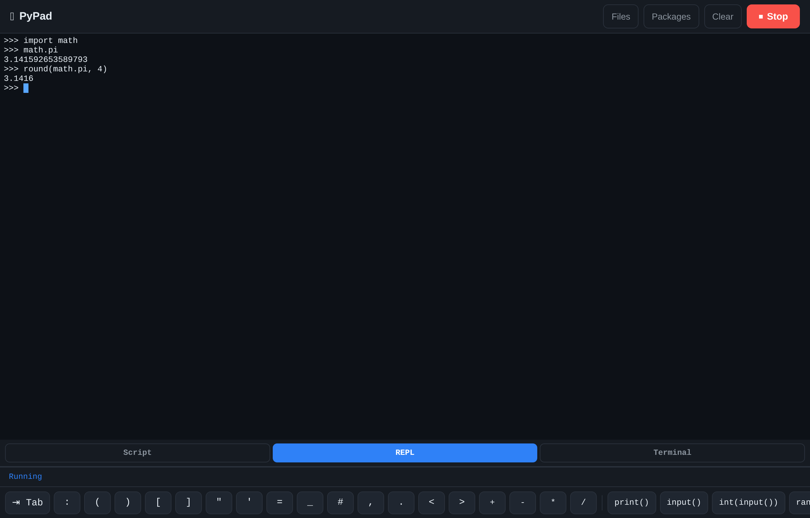

How to use PyPad
A small, safe place to write and run Python from a phone or a desktop browser.
What's new
- The desktop terminal. On a laptop or desktop, REPL and Terminal open as a real terminal — a genuine
$or>>>prompt, Ctrl+C to interrupt, arrow-key history, Tab completion, and paste that works. No Send button. Details - Save your code as a
.pyfile. A name box and a ⤓ Save .py button sit above the editor, with ⋯ beside them for three more ways out — for devices that refuse a download. Details - Packages can be removed, not only installed. Everything in the venv is listed with an ✕ beside it. Details
- Three more packages are available:
python-slugify,pylightxlandhumanfriendly. Details - Switching mode ends the old session, so a shell can never quietly receive the lines you meant for Python. Details
- Updates arrive on their own. Every file is stamped with the build it came from, so a new version can no longer hide behind a cache. Details
- This guide has a light theme. It follows your system setting, and the ☾ / ☀ button at the top switches it — the choice is remembered.
Getting started
Open the IDE in your browser — on a phone it looks like this:

Type some Python in the Code area, press ▶ Run, and the output appears in the Console. That is the whole loop.
Your code is kept in the browser as you type, so it is still there next time. When you want a real file on your device, the bar above the editor has a name box and a ⤓ Save .py button — or press Ctrl+S. Nothing is uploaded: the file is built in your browser and handed straight to it.
Not every browser allows that — in-app webviews and some Android browsers refuse downloads from a page. So the ⋯ button next to it offers three more ways out: Download via server, Share (your phone's own save menu) and Copy code. One of them will work; Copy works everywhere.
The screen
| Element | What it does |
|---|---|
| Code / Console tabs | Switch between writing code and seeing output. On a wide screen both are shown side by side and the tabs disappear. |
| ▶ Run | Runs the code. While a program is running it turns into ■ Stop. |
| Clear | Empties the console. |
| Symbol bar | The scrollable row at the bottom with : ( " _ and shortcuts like print(), input(), for, if. Tap to insert at the cursor — no keyboard switching needed. |
| › input line | Where you type answers to a running program (see below). On a desktop in REPL or Terminal mode this is replaced by the real terminal. |
| Pre-fill input | Optional: lines sent to the program the moment it starts. |
| ⤓ Save .py | The bar above the editor. Type a name, press it, and your code is saved to your device as a .py file. Ctrl+S does the same. The ⋯ beside it offers other ways out, for devices that refuse a download. |
On a desktop the Send button and the ⇅ move button are hidden — Enter sends the line, so there is nothing to reach for.
On a desktop it becomes a two-pane layout — editor on the left, console on the right:

Press Ctrl+Enter (or Cmd+Enter) to run without reaching for the button. Your code is saved in the browser automatically, so it is still there when you come back.
Modes
The console has three modes, chosen with the buttons at the top of the Console tab.
| Mode | What it does |
|---|---|
| Script | Runs the code in the editor. This is the normal mode. |
| REPL | An interactive Python prompt. Press Run to start it, then type one line at a time below and see each result immediately — just like Python's >>> prompt. Variables you set stay available for the next line. |
| Terminal | A shell on the server. Type a command, press Enter, read its output. Only shown if it has been enabled. |
On a laptop or desktop, REPL and Terminal open as a real terminal: you type straight at the $ or >>> prompt, with arrow-key history, tab completion and Ctrl+C to interrupt — and no Send button. On a phone they stay line-by-line, with the input box you can move above or below the output. Full details in The desktop terminal.
allow_terminal to true — or add ALLOW_TERMINAL=true to /opt/mobile-py-ide/.env and restart the service.
The desktop terminal
On a screen at least 860 px wide, REPL and Terminal stop being a text box and become a real terminal. Press ▶ Run and a genuine prompt appears — $ for the shell, >>> for Python — and you type straight at it.

>>> prompt, not an input box.| Key | What it does |
|---|---|
| Enter | Runs the line. |
| Ctrl+C | Interrupts whatever is running and gives you the prompt back. |
| ↑ / ↓ | Walks back and forward through your command history. |
| Tab | Completes a file name or command. |
| Ctrl+V | Pastes — Cmd+V on a Mac, or the right-click menu. Several lines at once are fine. |
There is no Send button here: Enter is the only key you need. The input box and the ⇅ button stay on phones, where they are the right tool.
Inside the terminal, python3 and pip are the IDE's own interpreter — not the system one — so pip list, pip install and pip uninstall typed there act on exactly the packages your code imports.
On a narrow screen the real terminal is not used at all — you get the lighter line-by-line console, which is kinder to a phone's memory and battery and starts instantly. If the terminal cannot load for any reason, a desktop quietly falls back to that same console.
Input & output
This IDE has a live console. When your program calls input(), it prints its prompt, pauses, and waits — then you type into the › line at the bottom of the console and press Enter. The program continues. You can do this as many times as it asks.
name = input("What is your name? ")
print("Hello,", name, "!")Run that, type a name in the console input line, press Enter — and it answers. The typed line is echoed in blue so the transcript reads naturally.
If you never provide input, a program that reads it will stop with EOFError — that just means "no input was given".
A run is stopped automatically if it goes quiet: after about 30 seconds with no output and no input, and at a hard cap of 2 minutes. You can also press ■ Stop yourself.
Libraries
These are available out of the box, no installation needed:
| Category | Modules |
|---|---|
| Everyday | math, cmath, random, statistics, decimal, fractions, json, csv, re, string, textwrap, pprint |
| Date & time | datetime, time, calendar, zoneinfo |
| Functional | itertools, functools, operator, collections, heapq, bisect, copy |
| Types & data | dataclasses, enum, typing, array, struct, uuid, base64, hashlib, secrets |
| Handy extras | sys, io, contextlib, traceback, unicodedata |
| Third-party (pre-installed) | numpy, requests |
Installing packages
Tap Packages in the top bar. You get a box to type a package name, the list of everything that is allowed, and the live pip output.
- Open Packages.
- Type a name — or tap one of the chips, which are exactly the allowed ones.
- Press Install. When it finishes,
importthat package in your code.
Removing one. Open Packages again — everything currently installed is listed at the bottom, each with an ✕. Tap it to take that package back out. Nothing here is permanent.
Recently added to the list: python-slugify (turns text into URL-friendly slugs — use it as import slugify), pylightxl (read and write .xlsx files, with no dependencies at all) and humanfriendly (format sizes, times and numbers the way a person would say them). Typing slugify is accepted as well: the bare slugify package on PyPI is a Python-2 leftover that raises NameError on Python 3, so that name installs python-slugify instead.
Only light, well-known packages can be installed. Heavy libraries — torch, tensorflow, pandas, scipy and friends — are refused, because they do not fit a small server and the whole point is to keep it quick.
Want one that is not on the list? Add it to EXTRA_PACKAGES in .env on the server, or install from a shell:
sudo bash deploy/add-packages.sh rich tabulateFiles & storage
Programs run inside a workspace folder on the server, and anything they save with a relative path stays there for the next run. So this works:
with open("notes.txt", "w") as f:
f.write("saved for later")
# next run:
print(open("notes.txt").read())Tap Files in the top bar to see everything in the workspace, download a file, upload one, or delete one. The line at the bottom shows how much space is used out of the limit.
A file you save from the editor with ⋯ → Download via server lands here too, so it is easy to find again.
Spaces clean themselves up: one that has not been used for about 24 hours is deleted from the server.
Writes are confined to your space — the rest of the server is read-only to your programs, so a wrong path cannot damage anything. os and open() are available for this; the process calls inside os (system, popen, exec*, fork) are not.
MAX_FILE_MB (256 MB by default). Adjust with PER_USER_MAX_MB, WORKSPACE_MAX_MB and MAX_FILE_MB.
What is blocked, and why
Before anything runs, the server checks the code and refuses a few things:
- Heavy libraries —
torch,tensorflow,keras,transformers,cv2,sklearn,scipy,pandas,matplotlib. They would not fit the server's memory. - Processes —
subprocess,ctypes,multiprocessing,pty, and the process calls insideos(system,popen,exec*,fork,kill, …). - Network —
socket,ftplib,smtplib,paramiko. - Escapes —
eval,exec,__import__, and attributes like__class__. (open()is allowed for the workspace.)
Each program runs in its own temporary folder, as a limited subprocess with a memory cap, and the folder is deleted the moment it finishes. A file that merely mentions a blocked word inside a string or comment is fine — the checker reads the real code.
Troubleshooting
| What you see | What it means |
|---|---|
EOFError: EOF when reading a line | The program asked for input but none arrived. Type into the › line while it runs, or pre-fill the input box. |
ValueError: could not convert string to float: '...' where the value shown is your own code | Something was pasted into the Pre-fill input box, so the program received your code as input. The IDE now detects this, clears the box and warns you in the console. You can also press Clear in that section. |
| Status: Stopped: no activity | The program produced nothing for ~30 seconds, so it was stopped — usually an endless loop. |
| Status: Time limit reached | The run hit the 2-minute cap. |
Error: importing 'os' is not allowed | The checker blocked a module. See the list above. |
| Server is busy… | Two programs were already running. Wait a moment and press Run again. |
| Terminal mode is turned off | Terminal mode is opt-in for safety. See the note in Modes. |
| not on the allowed list | That package is not in the reviewed set. Use one of the chips, or add it to EXTRA_PACKAGES on the server. |
| Paste does nothing in the terminal | Click once inside the terminal, then paste with Ctrl+V. The terminal now takes focus by itself, so this should not happen — but a click always fixes it. |
A $ prompt appears in REPL mode | That is the shell, so check which mode button is highlighted. Changing mode also ends the old session, so press ▶ Run again to get a fresh >>>. |
| The old session keeps answering after you switch mode | Changing mode ends the previous session. Press ▶ Run to start the new one. |
| Save .py does nothing | Some browsers — and most in-app webviews — refuse a download started by a page. Tap ⋯ beside the button and use Download via server, Share, or Copy code. Copy works everywhere; Share opens your phone's own save menu. |
| A change does not seem to have arrived | Your browser, or a cache in front of the app, may still be holding yesterday's files — which looks exactly like a broken button. Reload the page; if it still looks old, open the site in a private/incognito window. PyPad now stamps every file with the build it came from, so this should look after itself. |
How it fits together
PyPad has two ways to run code, and they travel different paths. Pick one to light it up; tap any box for what it does, or any step to see where it happens.
The left lane is the phone's path; the right lane is the desktop terminal's. Same server, different transport.
API
| Method & path | Purpose |
|---|---|
GET /api/health | Service status and limits. |
POST /api/run | One-shot: send {code, stdin}, get the full result as JSON. |
POST /api/runs | Start a run; body {code, stdin?, mode, pty?, cols?, rows?} where mode is script, repl or terminal. Add pty: true for a real terminal. Returns {runId, mode, pty}. |
GET /api/runs/:id/events | Server-Sent Events stream of output and the final exit. |
WS /api/runs/:id/ws | Attach to a run's terminal: raw bytes out, JSON in — {type:"input",text} or {type:"kill"}. Used with pty: true. |
POST /api/runs/:id/input | Send {data} to the running program. |
POST /api/runs/:id/kill | Stop the run. |
GET /api/packages | The allowed package list. |
GET /api/packages/installed | What is installed in the venv right now. |
POST /api/packages | Install an allow-listed package; body {name}. |
POST /api/packages/uninstall | Remove a package; body {name}. |
GET /api/files | List workspace files. |
POST /api/files?name=… | Upload a file into the workspace. |
GET /api/files/:name | Download a file. |
DELETE /api/files/:name | Delete a file. |
curl -s localhost:3000/api/run \
-H 'Content-Type: application/json' \
-d '{"code":"import math\nprint(math.pi)"}'Self-hosting
It is a small Node.js server (no npm dependencies) that shells out to Python in a sandbox. On an Ubuntu/Debian box:
curl -fsSL https://raw.githubusercontent.com/Vishalkumar-acad/mobile-py-ide/main/deploy/bootstrap.sh -o bootstrap.sh
sudo bash bootstrap.shPut it behind a Cloudflare Tunnel with a Cloudflare Access policy and only you can reach it. Pushes to main deploy themselves through GitHub Actions.
Updates reach the browser by themselves. Every front-end file is served stamped with the build it came from, and the modules carry that stamp on to what they import. A cache — the browser's, or a CDN's — therefore cannot serve yesterday's JavaScript after a deploy, which is otherwise a very convincing way for a fixed bug to look unfixed. Cloudflare in particular caches .js and .css by extension and can override an origin's Cache-Control, so the stamp is what makes a deploy actually arrive.